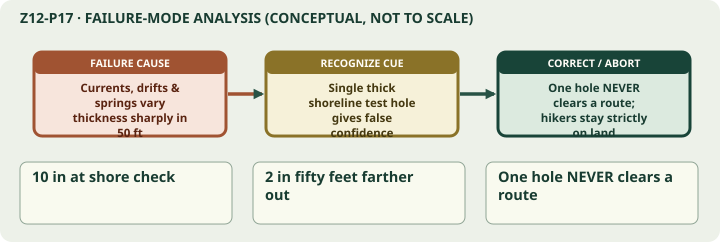

Z12-P17 · Extreme environments · Adapted historical material
Understand why one drilled thickness check never clears an entire lake
Avoid the lethal sampling trap of assuming a single thick shore measurement applies across an entire frozen body.
When it applies · Trained/equipped ice users evaluating local conditions and hikers interpreting nearby angler activity.
Equipment · Awareness that walking travelers belong on land; equipped ice specialists use repeated spud-bar/auger checks along exact travel lines.

Actions
- Recognize that lake and river ice forms unevenly due to shifting wind during freeze-up, varying snowdrifts, underwater currents, springs and depth differences—10 inches near shore can drop to 2 inches fifty feet out.[X01, E12]
- Understand that even equipped ice users check continuously every short distance with a heavy chisel/spud bar rather than trusting a single drilled test hole or yesterday's report.[X01, E12]
- Keep unequipped hikers, families and winter travelers strictly on land routes rather than testing ice with boots, sticks or rocks (tossing a rock proves nothing about bearing human weight).[E12, X01]
Failure recognition · Drilling one 8-inch hole near a boat launch and striding straight out across the middle of the lake without checking changing conditions.[X01, E12]
Verify · Confirm that no single thickness measurement or distant angler's hole is used to declare an entire crossing safe.[X01, E12, ED]
Stop or change course · Without specialized ice-assessment equipment, training and continuous verification—or whenever any doubt exists—remain strictly on dry land.[X01, E12]
Evidence and editorial notes
- E12 · Minnesota DNR · Ice Safety (current web edition)
- Section: Ice Safety > basic precautions · Conditions: Minnesota ice edges and travel routes
Support: No ice is universally safe. Strength can differ over short distances; appearance or tracks alone cannot establish a safe crossing.
Limitations: Currents, springs, snow insulation, and freeze-thaw cycles weaken ice invisibly. · Conflicting evidence: None; mandates shore-bound detour for foundational walking parties.
Editorial note: Maintains strict separation from specialized B013 ice chapters. · Specialist reviewer: Ice safety and search and rescue
Primary source · checked 2026-11-24 - X01 · Minnesota DNR · General Ice Thickness Guidelines (current web edition)
- Section: General Ice Thickness Guidelines > New Clear Ice Only · Conditions: Minnesota lakes and ponds during stable winter freezing
Support: Agency thickness guidelines apply ONLY to new, clear solid ice and are NEVER a guarantee of safety; white snow-ice is roughly half as strong, and currents, springs, inlets, outlets and snow cover create hidden thin zones.
Limitations: No ice is 100% safe; one drilled thickness check does not clear an entire crossing route. · Conflicting evidence: Directly reconciles B013 P01–P05, P11 and P17 with MN DNR warnings.
Editorial note: Enforces non-guarantee ice boundaries across Z12. · Specialist reviewer: Ice safety and winter search and rescue
Primary source · checked 2026-11-24
Source lineage · B013-P11 and MN DNR ice safety; adapted historical material · Classification · Adapted historical material.